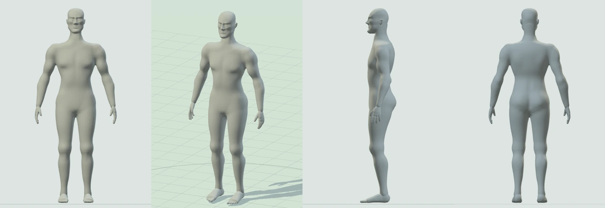
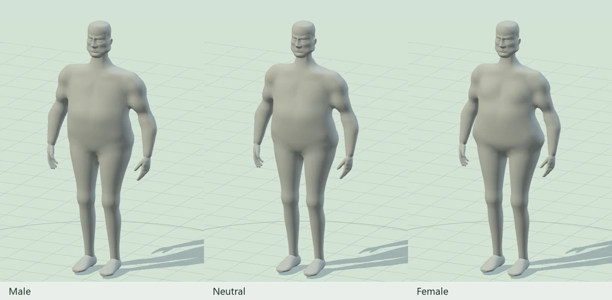
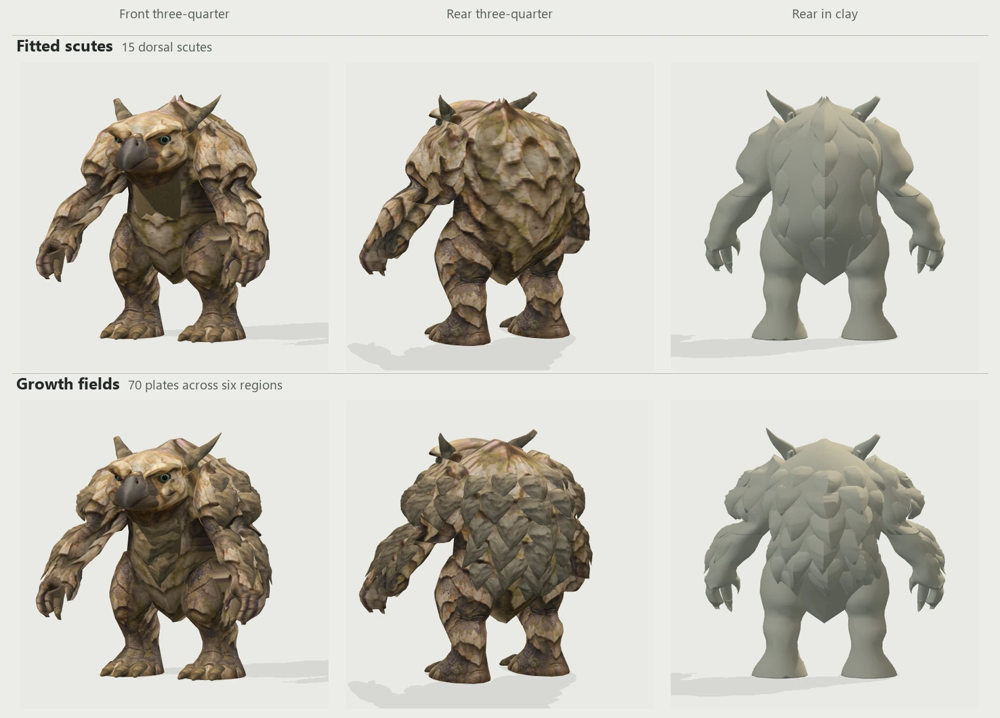
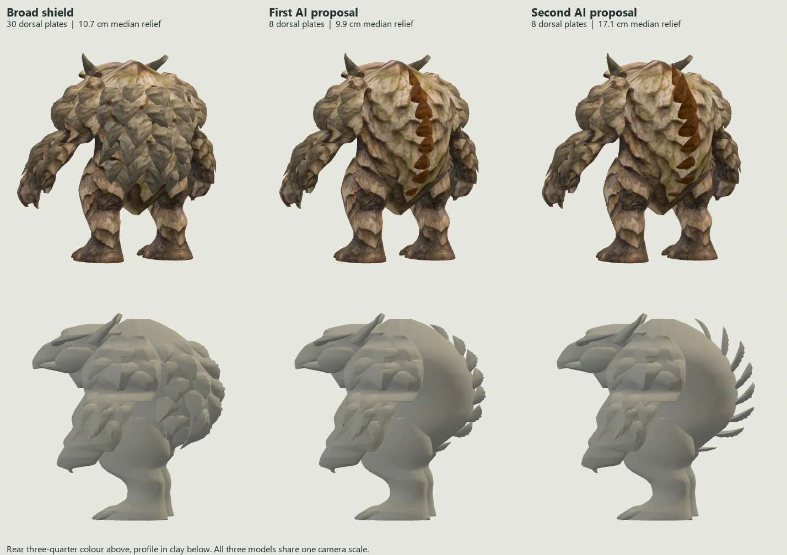
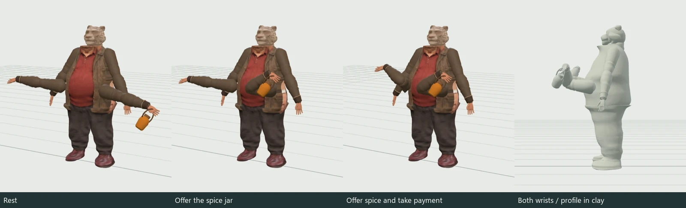
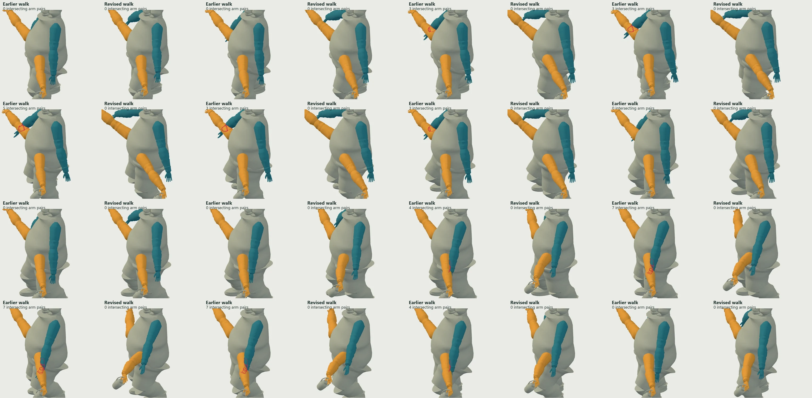
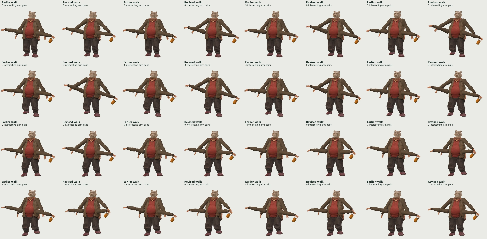
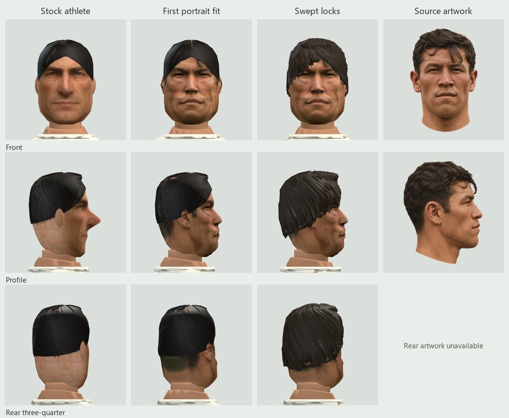
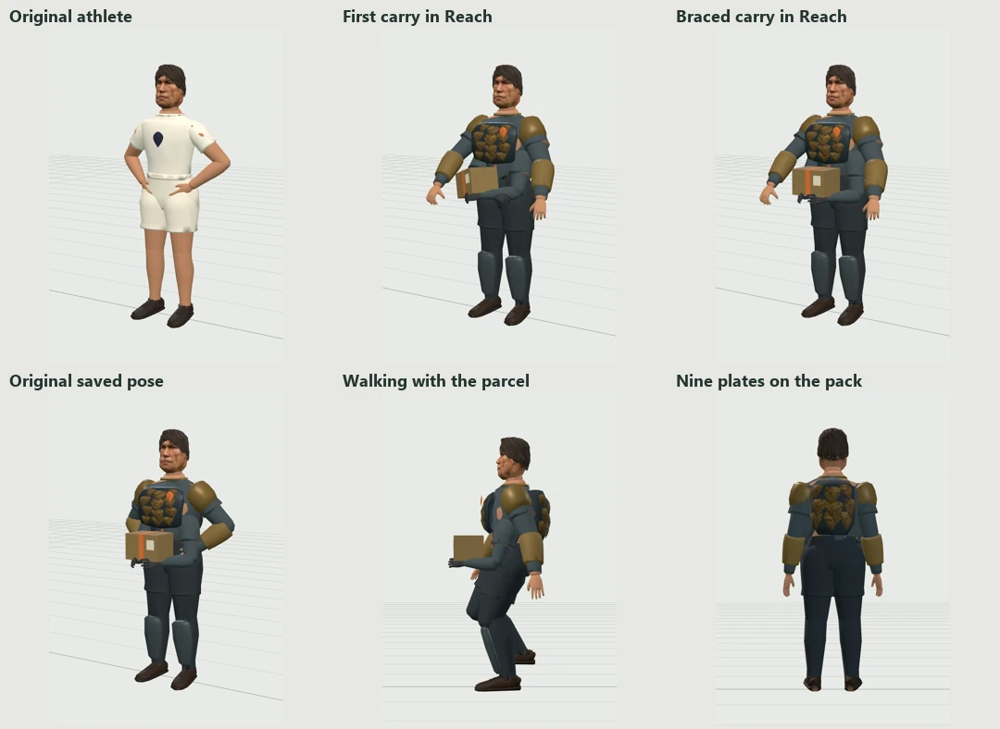
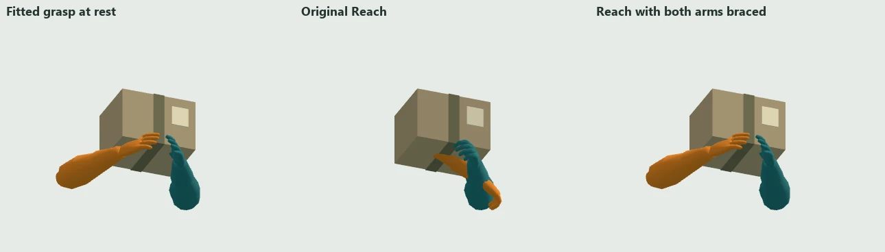

irudd-game-tools / Research plan
One character, many outfits
Can a player reroll a single feature, keep what they like, and recognize the same person in a game and an illustration? Start with a measured Three.js figure. Let the player steer its shape, then test what an image generator can carry into a new scene.
Start in the 3D view
Work on one evolving form. It starts on a metre grid with an orbit camera and a silhouette view. A nudge acts on the current geometry; the neutral slider position means “no further change.” An agent can replace the anatomy, add parts or reshape a face. Continue editing the accepted form from its new geometry.
Can the unclothed figure stand on its own?
Open a new humanoid in Anatomy and orbit it in clay. The chest has shallow paired volumes, the pelvis is smooth, and the barefoot figure has five toes per foot. The wardrobe retains the same figure’s work clothes and pressure suit. Saved forms reopen in the outfit they recorded.

For the jaw and throat, compare the underside of the chin, the point where the jaw turns below the ear, and the curve from the back of the skull into the neck. We inspected the scan-averaged OBJ heads in profile. 3D Scan Store’s free average heads.
The male neutral A-pose shows how the clavicles slope into the shoulders and how the fronts of the knees differ from the calves. The relaxed female A-pose provides a second body type for checking chest, abdomen and hip volumes. The life-model sheets show how posture changes those contours. The full-body sources provide visual references for the procedural meshes. Male 41 neutral scan and poses · Female 08 relaxed A-pose · Anatomy 360 pose sheets.
What does the humanoid profile miss?
We compared the workshop cartographer with the realistic male and female body meshes in Blender Studio’s CC0 Human Base Meshes v1.4.1. The same bundle includes a hand and foot that can be inspected separately. The workshop builds its own geometry in Three.js. Download the original Blender reference models. The side-by-side picture shows those meshes and is local reference material. It appears below in a copy that has the file.

At half the standing height, the seat projected behind the lower back by 1.8% of stature in the earlier export and 3.3% in the revision. The two reference values were 2.5% and 4.3%. At 72% of standing height the chest front moved from 14.2% to 12.0% of stature ahead of that same back plane. Both references measured 12.3%. Each measurement intersects the mesh with a horizontal plane, keeps points within 7.3% of stature on either side of the midline, and uses the rearmost point at 60% height as its depth origin. These figures describe the four meshes pictured.
The ear fold, neck slope and shoulder-to-elbow contour are visible in clay. The shoulders remain round in front view, and the hands still have less knuckle definition than the hand study. Recheck those details close up, in profile and while reaching.

Experiments
Start with the interactive 3D view and use it to select bodies and outfits for the rig and export tests. Run the 2D reference-pack study after the 3D characters are approved. All pass marks below are proposed pilot criteria.
1 · Can one rig wear all three outfits?
- Build
- Use a short, broad figure and a tall, narrow one. Give the shared skeleton adjustable bone lengths, a small set of authored body shapes and named attachment points. Start with rigid low-poly pieces. Skin the elbows, knees and garment panels where bending matters. Hide covered body regions per outfit and restore them when unequipped.
- Try to break it
- Render both bodies in all three outfits, in A-pose, stride, crouch and overhead reach. Keep a game camera and a rotating inspection view. Check wrists, shoulders, hips and knees against the pose. Pay particular attention to the short figure in the suit and the broad figure in the base layer. Use opaque, practical clothing and neutral presentation throughout.
- Decision
- Keep one rig if all 24 combinations pass a turntable inspection without exposed holes, visible skin poking through clothing or a detached limb at 128-pixel character height. Save the failing views. If masking fixes a hole only at rest, fit a garment shape or change its weights. If bulky gear still fails, give it a dedicated fitted mesh before adding more body sliders.
2 · Does a Three.js character survive export at the right size?
- Contract
- Use metres, +Y up, +Z forward and a common floor. Record barefoot sole-to-skull stature in a standard standing pose. Record boot sole thickness and the equipped floor-to-top height separately. Preserve the source recipe alongside the portable asset.
- Round trip
- Use the assembled Three.js object directly in a small game scene. Export its character root with
GLTFExporterin binary mode, including a short reach animation. Load the GLB in a fresh Three.js scene and Blender. Check orientation, skinned and rigid parts, morph weights, material colors, embedded resources and animation. Use a portable unlit or standard material for the silhouette style. - Decision
- Require zero Khronos Validator errors and inspect warnings. Compare world-space sole, skull, wrist and helmet landmarks in the standing and reach poses against the source, allowing 1 cm. Show both figures beside a 2 m frame at fixed orthographic zoom. If the visual style alone fails, simplify the material. If rig or scale fails, fix export before testing image reconstruction.
glTF defines units, skins and morph targets. Three.js documents binary export. Independent reimport tests the particular assets we build. glTF specification · Three.js exporter · Validator
3 · Can small nudges steer a structural AI variation?
- Player action
- Pick the whole form or one part. Preview a relative size, movement, or facial change. Apply it locally or send it together with the current form and a direction such as “keep the head and make the lower body a six-legged crawler.”
- Authority
- The accepted geometry is the source of truth. The agent may add, split, reshape or remove parts. Sliders return to neutral when a revision is accepted. The workshop can display both revisions from the same angle before acceptance.
- Test
- Request six new structures across human and creature studies. Inspect the side and rear silhouettes and count requested limbs. Accept a change, nudge a newly authored part, undo, and reload the saved form. Require unchanged unrelated parts on local edits, exact recipe recovery after undo and correct rejection of stale proposals.
- Decision
- If proposals repeatedly converge on the same body, test distinct seeded spatial constraints. If an agent needs anatomy that the scene format cannot express, extend its geometry vocabulary against that concrete failure.
4 · Later 2D study · Which reference views help the next image?
Build the sheet from the approved mesh
Render aligned front, side, back and three-quarter full bodies in a relaxed A-pose. Fix the orthographic frustum and pixels per metre across the cast. Mark the floor, skull, shoulders, hips and knees. Put a second character or a 2 m frame on the same baseline. Use a separate, clearly labeled magnification for head front, profile and three-quarter crops. Show the character’s left and right explicitly when a feature is asymmetric.
Give the human a labeled PNG with the outfit triplet, neutral face, a second expression, palette swatches and two or three distinguishing features. Give the agent clean individual crops plus a manifest of view, character revision, outfit, camera and scale. Draw labels and rulers after rendering. Keep identity references available separately from removable clothing, pose and scene references.
Compare reference packs on the same requests
Use four identities with similar-looking distractors. For each, request three held-out scenes: a different jacket in a market, a seated profile at a workbench and an open-visor suit beside a known-height crewmate. Run text only, text plus a single portrait, and text plus the measured pack. Keep prompts, version, output size and one draw per cell fixed across arms. That costs 36 images. Blind filenames and save every output. If the full pack wins, remove one group of views at a time on failed or borderline cases to find the cheapest effective pack.
- Decision
- For each output, independently score a four-way identity match, required clothing, pose and setting. Count a success only if all four pass. Advance the pack if at least 9/12 outputs succeed and it beats the single portrait by at least two cases. For the four lineup scenes also score correct height order and ratio within 5% at matched depth and standing posture. Log hidden landmarks as unscorable. Repeat borderline comparisons with fresh draws. If identity holds but scale fails, condition on a rendered pair in the target pose.
Animation model sheets combine turns, poses and cast comparisons. Orthographic projection preserves apparent size at fixed zoom. Image editing accepts visual references, but recurring characters can drift. The pack and its pass marks are our hypotheses. Walt Disney Family Museum, character worksheet · Orthographic camera · OpenAI image guide
5 · Can people recognize the body inside the suit?
- Blinded lineup
- Expand to eight adult identities. For each, show a base-layer target and four candidates wearing the same work clothes or pressure suit. Match distractors by build, share palette and props, shuffle positions, and rotate the candidates to a held-out angle. Use identical lighting. Run at 128-pixel figure height in silhouette and flat color. Normalize framing for this identity task to remove absolute height as an easy clue.
- Decision
- Run 40 balanced trials per rendering mode, half per outfit. A random pick succeeds one time in four. Pilot target is at least 16/20 matches per outfit in each mode. Log which pairs were confused. If helmets erase identity, test adjustable shoulder shells, leg proportions and stance separately. A deliberately identical sealed suit may make its wearer unknowable. Record that limit and allow explicit player-chosen markings when the game needs recognition.
- Separate scale task
- Restore fixed world scale. Show standing pairs in random left/right order at 2%, 5% and 10% height differences, with and without the 2 m frame. Ask which person is taller, then repeat with boots and helmets. At 10%, aim for at least 8/10 correct per condition. If the geared task fails, expose barefoot and equipped height in the editor. This small pilot guides design choices and should be repeated with new raters and characters before setting defaults.
Valve used character silhouettes for rapid class recognition. Recognizing individuals within a class and outfit is a harder hypothesis. DreamBench++ found that common image-similarity scores can disagree with human judgments of subject preservation. Valve rendering paper · DreamBench++
6 · Does image-to-3D save work on a usable asset?
- Smallest comparison
- Start with a rigid suit backpack that has an asymmetric side port. Keep the authored mesh and its attachment socket as the control. Give original TRELLIS one clean three-quarter crop, then its multi-image path three separate consistent views from the same mesh. Hold out the rear three-quarter view and use identical plain backgrounds. Try three draws per generated condition. If generative concept art is the intended input, repeat the winner with an approved image-generated concept and measure the extra drift.
- Measure the whole job
- At the same camera and scale, compare neutral clay and silhouette renders to the held-out reference. Record side-port handedness, contour overlap, triangle count, material count, GPU time and hands-on minutes for cleanup, scaling and socket fit. Test equip and remove in an unmodified game scene. A later whole-character trial adds retopology, rigging, skinning and the pose and GLB checks above.
- Decision
- Advance to a coat only if at least two of three draws in a condition preserve the side port, reach 0.85 silhouette intersection-over-union in the held-out view after socket alignment, and fit within the authored triangle budget. Median hands-on time including failed attempts must beat making the control. If only the front view looks good, retain the generated concept as art direction and build the part on the existing rig.
Microsoft demonstrates mesh/GLB output and provides a multi-image example for original TRELLIS. Its authors describe that conditioning method as experimental. Pin the model and environment before comparing runs. TRELLIS project · Implementation notes · Multi-image example
Procedural techniques worth testing
The hummingbird example suggests a practical experiment for this editor. Give the agent feedback from the asset the game actually loads. Then give it a small set of shape-building operations that produce editable geometry. The following comparisons test where that approach helps.
Can a growth rule give a creature a recognizable shell?
A shell has a direction of growth. The same two coordinates can drive where each plate attaches, how far it overlaps its neighbour and where a change in colour belongs. Fowler and colleagues coupled shell shape with surface pigmentation. Willmott described repeatable, spaced placement for objects on surfaces. Applying these ideas to individual plates is our experiment. Modeling Seashells · Fast Object Distribution
Put a low crest and a high crest on the same back. Keep camera, material, pose and scale fixed. Look for countable tips and a clear direction of overlap in side and rear clay views. Reroll a tip seed, verify that every root stays fixed, then pose and reload the game GLB. A coloured ridge that disappears in clay fails this test.
Can four arms share a movement without tangling?
Hecker and colleagues represented gestures independently of a particular skeleton. For a four-handed merchant, try naming a destination and a role for each hand. Ask one hand to offer the jar and another to support it. Keep the same goal on a second body with a different torso width and arm length. Measure hand-to-jar distance in metres, elbow bend direction and the minimum separation between unrelated forearms through the reach. Judge the ordinary two-arm version beside it. Hecker et al., motion retargeting
Close surfaces also need control over which pieces can join. Test smoothing the shoulder socket while keeping a neighbouring arm clear during a crossed-arm pose. Inspect the gap from the back and in silhouette. Gourmel et al., gradient-based implicit blending
Can face and wardrobe edits carry identity across bodies?
Our test can use original faces with corresponding brow, nose, mouth and jaw landmarks. Fit two contrasting faces independently, interpolate them, then check a previously unused three-quarter view with hair hidden. For wardrobe, repeat the same sleeve-narrowing gesture on lean and broad wearers and inspect the elbow at full reach. The held-out views decide whether adding more controls is worthwhile.
Does steering reveal genuinely different structures?
Karl Sims encoded repeated and recursive body structures. MAP-Elites tracks the best result in each region of a user-defined space of variations. For this workshop, hold the prompt and draw budget fixed. Compare ordinary rerolls with proposals deliberately spread across limb count, torso proportions and stance width. Record every draw, including broken rigs and duplicate silhouettes. Compare occupied regions and how many distinct, usable forms the artist accepts. Keep the part recipe for each accepted result so the artist can change one branch later. Evolving Virtual Creatures · Mouret and Clune, MAP-Elites
Can one growth rule build editable creature armour?

The armour study tests whether overlapping plates remain readable in profile. On our porter, select dorsal mantle and open the plate controls. Each plate has an attachment, an editable shape and a seed for its tip. A single field changes the number, direction and overlap of the plates. A pinned tip keeps its pattern when the rest are rerolled. Editable porter · Game model
The export has 70 plates across six body regions and 24,124 triangles. All 70 plates intersected their intended carriers at rest and at six samples in each of four movement clips, for 1,750 contacts in 1,750 checks. Front and rear views reveal different plates. The raised arm also exposes a paint streak on the torso. The head and horn colours use original ImageGen artwork. Fixed-camera readings, geometry tests and art sources
To repair the exposed torso, we rendered its shape from four directions and asked ImageGen to paint just that part. The new projection fills the hidden underarm with mottled hide. Replaying both crest edits preserved the vertex positions, triangles, skin weights and animation keys in all three comparisons. The front belly became lighter. Raised arm before and after · Editable repaint · Paint sources and checks

A transfer to the reef cartographer's swimming tail exposed a 0.229 mm gap after mesh reduction. Preserving just the plate socket distorted the tail tip. Keeping six points around each affected sweep ring as well as the mating triangles restored all 777 sampled contacts. In three views the reduced tail retained 99.26–99.51% silhouette overlap with the high-detail control. Transfer recipe, failed reduction and measurements
Can an AI turn a broad shield into a tall crest?

We asked for eight ochre sawteeth and pinned one existing tip. The first proposal narrowed the field to one column, but median centreline relief fell from 10.7 to 9.9 cm. We added an independent outward tilt around each plate's heel, inspected the game export and asked the agent for roughly twice the relief. The second proposal reached 17.1 cm, a 73% increase. All 95 region origins stayed fixed. Across both edits the 86 regions outside the dorsal field kept their exact recipe data. All eight crest plates still touched their carrier in 200 sampled checks. Editable crest · Game model · Actual agent operations, measurements and limits
Can an artist move one of four hands without disturbing the others?

Open the merchant in Pose joints, choose a hand and select Guide wrist. Drag its handle, nudge in world metres, or choose a point on the posed surface. Give other arms room tests 36 elbow directions against approximate arm and torso volumes. The hand keeps its orientation so a carried jar can move without tipping. Save the pose to add a named clip to the GLB. Editable merchant · Game GLB with both gestures
In the first gesture the wrist travelled 57 cm. Its three neighbours stayed fixed. The second gesture moved the opposite lower wrist while keeping the jar in place. Both wrists arrived within 0.1 mm of their requested positions after GLB reload. The same control reached an instrument-panel position on the two-arm aviator. Two-arm control in colour and clay

The original painted sleeves crossed when we pointed the elbows outward. We recut the four sleeves, shaped the folds, added cuffs and tried the elbow search. Across the final rest pose and two saved gestures, none of the 150 tested cross-arm region pairs had a non-coplanar triangle intersection. That count includes the cuffs and their edging. The arm still emerges abruptly from the lower jacket. Movement between the saved gestures and contact with the torso need separate tests. Recipe operations, joint readings and intersection counts
What happens between the saved poses?
Scrub the same walking motion in both exports. Turquoise marks the upper pair of arms, ochre the lower pair, and red lines show where triangles intersect. The game colour view uses a wider camera. Still comparison



The original counter merchant's arms crossed in 22 of 32 walk samples. Crouch failed in 19 and Reach in 14. The revised motion swings neighbouring same-side arms about the line through both shoulder sockets. Spreading the upper sleeve first gives it space to pass the lower socket. Each elbow can still bend, and the loaded wrist counter-rotates to keep the jar upright.
In the revised counter merchant, festival conductor and older quayside merchant, we found zero sampled arm-to-arm or distal-arm-to-torso intersections in Idle, Walk, Crouch and Reach. Each clip was sampled at 32 phases. We also checked 51 interpolated samples between the merchant's two saved gestures and rest. In the counter merchant's unadjusted rest pose and both saved gestures, four forearm triangles still intersect the torso. The lower shoulders also read as separate sleeves attached to a jacket. Props and the intervals between samples need their own tests. Revised merchant GLB · Before and after counts by character and clip
Does a new face transfer to the existing athlete?

The earlier held-out athlete had stock face paint. For this follow-up we asked ImageGen for a matched front and profile study from 1912 photographs of Jim Thorpe. We paired 15 frontal landmarks, traced 21 profile points and applied the paint and an editable groom to the existing head. The stock body, clothes, hands-on-hips pose and 38 other parts kept their data. Looking right changed 651 pixels in a fixed 480-pixel-square render. The nose and lips project differently in the reduced mesh, with a maximum sampled profile change of 23 mm. The square jaw, narrow lids and thick, regular hair locks remain visible. The generated side view is an interpretation. Historical recognizability still needs an independent test. Olympic photograph · 1912 portrait · Fitted athlete GLB · Editable portrait · Camera, hair attempts and measurements


Can the existing athlete become a four-handed courier?

A live agent proposal added lower arms, a parcel and chest armour in 27 operations. The first fit crossed the new arms and tilted the box into the chest. Fable used 28 further operations to place the arms in a cradle, fit sleeves and trousers, and add a plated pack. The fitted head, eye rig, artwork, stance and saved pose records match the source athlete exactly. The courier is 1.856 m tall and has 21 editable plates. First fitted export · Editable courier · Courier GLB


Parenting the parcel to one hand left the supporting hand free to drift 33.6 cm relative to it during Reach. Select each supporting upper arm and enable Hold this arm in its carrying pose during movement to keep the fitted grasp. After re-export, both hand centroids stayed within 0.1 mm of their original positions in the parcel frame. Both hands intersected the parcel at all 128 sampled phases across Idle, Walk, Crouch and Reach. The four arms had zero sampled cross-arm intersections in those moving clips. The original arms and new sleeves still intersect at rest and in the saved hands-on-hips pose. Gaps remain around the knees and elbows. Proposal, steering, hashes and measurements by clip
Can an agent see a bad repair in the game mesh?
On an AI proposal, Inspect game export bakes the reduced mesh and atlas, reloads the GLB, then renders front and three-quarter rest views plus a posed side and rear view. Refinement sends these images to the agent. Inspect a second proposal to toggle between exports. The next refinement includes both versions, with matching cameras when the model fits the earlier framing.
Two live revisions of the original aviator failed. The agent first raised the lowest trouser-seat control point by 28 mm. The front view showed a more pronounced bulge. Given both exports, the agent recessed the seat and both thighs. A 256 × 256 front-view pass through the GLB measured 103 pixels that had shown cloth and now showed bare body. We rejected both proposals. The editor now reports where sampled pixels switch from a tagged garment to tagged anatomy. The separate figure builder has a ray test for seat coverage across 24 bodies. Actual requests, edits and coverage result · Rebuilt human figures
Results from the 3D workshop
The six-target benchmark gallery records original 3D renders, a blinded clay identification trial, a world-scale lineup and independent GLB playback. It also records a six-way same-source face match across clothing and cameras, an independently fitted rescue vest, a live whole-creature image reroll, an isolated species change on an existing character, a missed part fit and its recovery, a ray test through an open shell and the measured effect of game-mesh reduction.
Two later trials held the starting body fixed. An artist-authored choice group produced three or eight separately jointed legs on request. A generated coastal-biologist portrait kept 25 of 26 region records unchanged and acquired reusable expression controls. The gallery includes the editable results and records failed fits and retries.
The segmented arm trial checks whether moving the bend to the elbow keeps adjacent limbs apart. It compares two-arm and four-arm forms, a modest practice layer, a stage costume and pressure armour. The old four-arm figure passed attachment checks while its arms still crossed during movement.
The single-character transfer trial tests whether a fitted portrait, four-armed anatomy and a traced garment stay editable together. The first export lost the connection at the neck and clipped the waistband. The revised garment and fittings survived the four sampled movement clips.
The paired portrait trial tests whether original front and side studies can guide geometry, colour, animated eyes and a receding hairline. The exported profile follows the generated study within a millimetre on average. The earlier head still fits the game creator’s low-angle screenshot more closely.
The angled dockworker comparison follows the same facial features through a depth edit and tests separate low-angle and frontal views of a private game reference. It also checks the exported spectacle rims, bridge and ear hooks.
A four-outfit GLB trial tests the single-file wardrobe in Three.js and Blender. It measures rig isolation, mesh fidelity and recall at a fixed walking phase.
The clothing trial now has three saved outfits on one wearer and a portable rigged GLB. Compare the open tabard and layered cape while the same wearer walks and reaches. A creature trial also compares one shared marking pattern at full and reduced mesh detail. The results link to both game-ready models.
The two-pass merchant experiment tests whether a second direction can fix a specific failure in the first proposal. Metric cargo placement passed. The proposed fins floated above the tail. A follow-up fitting trial seated all six attachments and checked their exported geometry through six clips.
A four-hand pose experiment checks whether a gesture survives a saved recipe and GLB export with independent limbs.
The paired-landmark trial compares the dockworker directly to a private game portrait, and the profile-fitted ranger to a second portrait. The gallery reports selected and additional feature errors separately.
The photographic profile trial tests whether a traced nose, lips and chin survive a reduced GLB. It compares projected depths at intermediate heights and inspects the same head at three-quarter.
The movable-eye experiment measures neutral-face drift, independent gaze and full eyelid closure after game export.
A photo-guided portrait trial tests whether generated depth preserves facial structure when the surface color is hidden. A separate glider trial tracks 13 attachments through a bent body. Both include their accepted editable form in the 3D results.
The latest experiments converted a human starter into an eleven-point swimming eel, compared four hair constructions on the same head, and repainted twelve garment regions with identical silhouette masks. The gallery includes the exported models and measurements.
The four-hand placement trial tests whether a named point on the character improves AI placement. The first live reroll confused the original shoulders with the requested lower ribs. The second used two artist-marked sockets. The trial measures the error in the exported triangles and tests the joins during movement.
The four-outfit wardrobe trial asks whether a fitted skirt can reproduce the hip, knee and hem curve of a reference skirt while an existing runner walks and crouches. The comparison includes the original trace, reduced model, movement measurements and editable wardrobe. The next trial should put the same trace on a different stance and test a movement outside the baked clips.
What to judge in the first session
One test asked whether an agent could add unfamiliar topology to an existing animal. It built a 48-point control cage around a true opening in a crest. A separate GLB player could see through the centre and intersect both walls at its rim. One clothing assignment needed correction before the crest was visible. Inspect the crest and its measurements.
Use the generator to make two revisions with deliberately different proportions. Inspect each in silhouette and in work clothes, then try a shape the starter body cannot describe. Keep the change if you can orbit it, nudge one new part, and recover it after export and reopen. The later 2D study will use views of an approved 3D form.